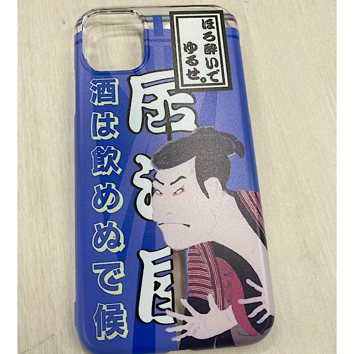
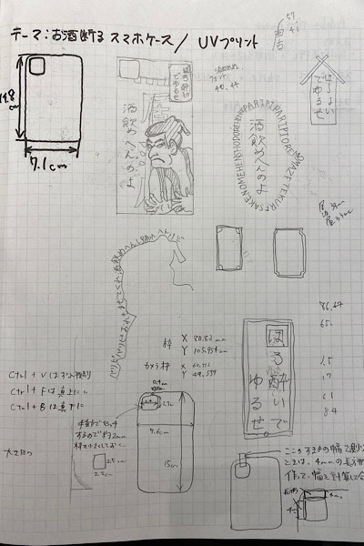
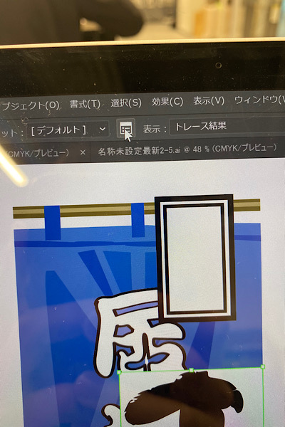
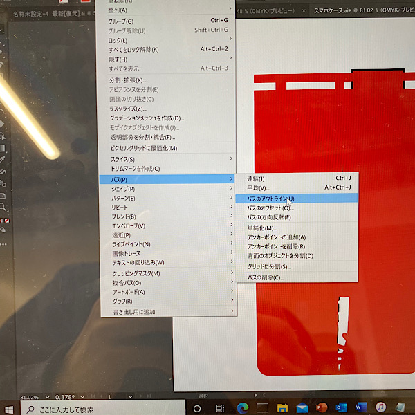
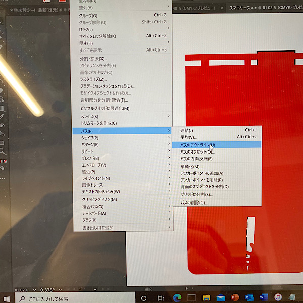
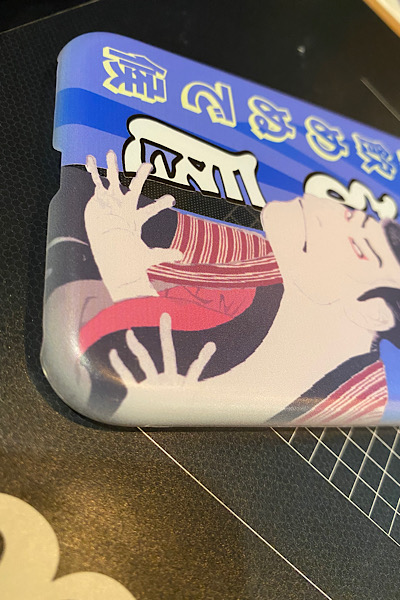

課題：機能するレベルのプロトタイプを作成しよう
対象：電車内で嘔吐する女の子
前回の課題リンク
Design for Others-1
作品

《説明》
（前回の課題はセーラー服を着たおばさんをターゲットとしたが、グループの仲間が嘔吐する女性をターゲットとしていたため、変更。）
お酒を飲みたくない人が日ごろから意思表示できるように作られたアイフォンケースです。
常に持ち歩くというテーマからアイフォンケースを採用。
お酒を全く飲むことができない人に向けたものではなく、多少は楽しみたいが、気分を害すほど飲みたくない人に向けたものである。
このスマホケースをつけていれば、お酒があまり飲めないという話題になること間違いなし。
女性がつけるには少し気が引けるようなデザインを、数あるケースの中から選択していることからも飲みたくないという意思表示につながっていると信じたい...
《制作プロセス》
Adobe illustratorでデザインの考案

スマホケースのサイズでイラストを描く（作成の前にノギスで大きさを測る）
.png)
暖簾などのイラストを書きたかったので、画像を配置し、画像の透明度を下げてなぞった後に画像を消した。
やり方：ファイル→配置
.png)
カメラの窓枠のように配置の計算が難しい場合は、外枠からカメラ枠の幅の大きさの長方形を作る。
.png)
プリント時、色が透けないように下に白を塗るように設定する。
やり方：
- デザインをコピーする（ctrl＋F）
- 右クリックで全部グループを選択
- 画像トレースを選択する（画像は認識しにくいので、図形にする必要があるため）
- デフォルトの右にある四角いやつを選択し、カラーモードをグレースケールにし、その他を下の画像のように設定する
- 拡張を押す
- デザインを選択し、線をなしにする（オブジェクト→パス→パスのアウトライン）上で、塗りを適当な色にする。（今回は赤）

.png) 
完成したら、透明枠＋枠ｔ、透明枠＋デザインの2つで保存し、プリントにGO!
《ミスと修正》
図形の形にデザインをトリミングする方法ケースの大きさをおおよその四角に見立てて作ってしまったので、ケース本来の形に合わせることに。
方法：
- トリミングしたい枠を作る
- トリミングするものよりも大きめのデザインを作る
- デザインの端とその枠を白い矢印で選択する
- 右クリックでクリッピングマスクを作成を選択
.png)
デザインの大きさを、印刷物よりも大きめに作っておくことで、側面にグラデーションがかかり、仕上がりがきれいになる。

使用機材
UVプリンター
同じ班のDesign for Others-2
平野くん小倉くん
東原さん
大野さん